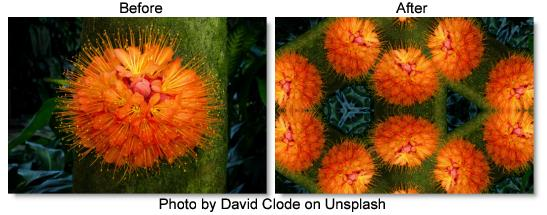

S_Kaleido
Description
Reflects the image into a kaleidoscope pattern.
The S_Kaleido filter comes from the Emmy award winning Boris FX Sapphire filter set.
Category
Stylize.
Controls
Presets
To select a preset, pick one from the Presets window.
Pattern
Selects whether a diamond, octagon, square or trianglular pattern is used.
Diamonds
Uses a diamond pattern.
Oct
Uses an octagonal pattern.
Squares
Uses a square pattern.
Triangles
Uses a triangular pattern.
Center
Center location of the kaleidoscoped image.
Z Dist
Scales the distance of the entire result in or out from the Center. Increase to zoom out, decrease to zoom in.
Rotate
Rotates the kaleidoscope's reflection pattern about the Center by this many counterclockwise degrees.
Inside Shift X & Y
Translates the image inside the kaleidoscope before it is reflected.
Inside Z Dist
Zooms the image in or out inside the kaleidoscope before it is reflected.
Inside Rotate
Rotates the image inside the kaleidoscope before it is reflected.
Kaleido Amount
Adjusts the overall amount of distortion applied to the image. Set this to 0 to leave the image unchanged or to 1 for a normal kaleidoscope pattern.
Wrap X & Y
Determines the method for accessing outside the borders of the image. This is used only if the image inside the kaleidoscope is not contained within the shape of mirrors.
No
Creates black beyond the borders.
Tile
Repeats a copy of the image.
Reflect
Repeats a mirrored copy. Edges are often less visible with this method.
Filter
If enabled, the image is resampled using pixel averaging. This removes aliasing and gives a higher quality result, although it may not be necessary if your image is smooth with no sharp edges or high frequencies.
Crop Input
These 4 parameters, Crop Top, Crop Bottom, Crop Left, and Crop Right, allow selecting a rectangular subsection of the image to be processed. If the Wrap parameters are set to "No" the exposed borders will be transparent. If the Wrap is "Tile" or "Reflect", the image is wrapped on the new cropped borders to fill the frame. This can make it easier to avoid artifacts due to distorting an image with bad edges.
Show Center
Enables/disables the on-screen control for adjusting the Center parameter.